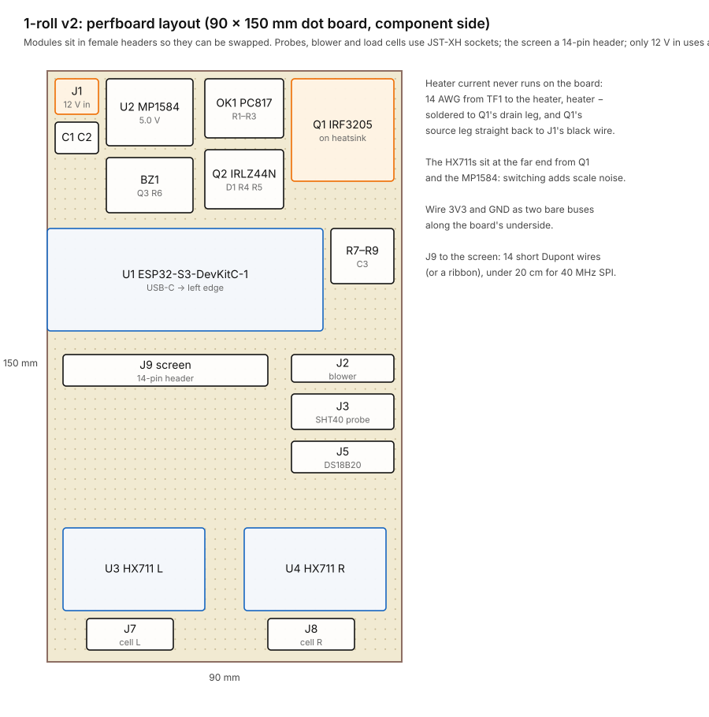

The single-reel box with its axle resting on two load cells, one under each end, so the reel weighs right wherever it sits on the axle. A 12 V 150 W PTC heater and a blower, an SHT40 probe for chamber temperature and humidity, a heater-outlet probe, and a 2.42" OLED on the front. Hand-built on perfboard from through-hole parts and AliExpress modules, running the dryer firmware on an ESP32-C3 SuperMini. No filament sensor in the box: the BTT SFS goes on the printer.
| 1-roll | 1-roll v2 | |
|---|---|---|
| Reel support | Bearing rollers on one load cell | Fixed 8 mm axle, its two ends on two load cells; the reel spins on hub cones with 608 bearings |
| Filament sensor | BTT SFS at the box exit | None in the box (the SFS mounts on the printer) |
| Fans | Blower + exhaust | One blower; a passive vent in the lid |
| Display | 1.3" OLED (optional) | 2.42" OLED filling a 90 × 70 mm front (1.3" also supported) |
| Controller | JLCPCB-assembled board | Perfboard: SuperMini, HX711 and MP1584 modules, through-hole parts |
| Hottest setting | 70 °C | 65 °C, because the load cells sit in the chamber |
The axle is fixed and drops into a printed U-cradle on the free end of each bar load cell. The other end of each cell is screwed to a bracket on the side wall. The reel spins on two printed hub cones, each with a 608ZZ bearing, so loading stays top-down: lift the axle out, slide the reel on, drop it back in.
The cells sit in the heated chamber. Bar load cells are temperature-compensated only to about 40 °C, and their zero drifts with temperature.
| SuperMini pin | Goes to | Notes |
|---|---|---|
| GPIO0 / GPIO1 | HX711 left: SCK / DT | |
| GPIO3 / GPIO6 | HX711 right: SCK / DT | Its own clock |
| GPIO2 | DS18B20 heater-outlet probe | R9 4.7 k pull-up, which also holds this strapping pin high at boot |
| GPIO4 | Heater: R1 470 Ω → PC817 → IRF3205 gate (from 12 V) | R3 10 k holds the gate low at power-up |
| GPIO5 | Blower: R4 100 Ω → IRLZ44N gate | R5 10 k pull-down |
| GPIO7 / GPIO8 | I2C SCL / SDA: SHT40 (0x44), OLED (0x3C) | R8 / R7 4.7 k pull-ups |
| GPIO10 | Buzzer through Q3 2N2222A (R6 1 k) | |
| GPIO20 | Front button to GND | R10 10 k pull-up |
| GPIO9, GPIO21 | Spare | GPIO9 is the board's BOOT button |
The 150 W heater draws about 12.5 A. The heater path never runs along perfboard tracks:


The screen shows:
The same firmware as the 1-roll (firmware/), built as dryer-1roll-v2. It keeps the modes (Dry per material, Keep dry, Print, Off), the PID, the safety cut-outs, the Wi-Fi setup hotspot, the status page, the REST and WebSocket API for the Printer Control Center, and updates over Wi-Fi. For v2 it adds:
POST /api/calibrate {"grams":500,"step":"left"|"right"|"middle"}POST /api/scale/learn {"start":true|false} for the driftscale.cells (left and right grams) and scale.drift in /api/statessd1309 (2.42", the default), ssd1309_0 (the other common 2.42" wiring) or sh1106 (1.3"). To change it, hold the button while powering up to step to the next type, or send POST /api/config {"display":"sh1106"}.Flash dryer-1roll-v2-full.bin at 0x0 the first time; after that, upload dryer-1roll-v2.bin at /update.
All from AliExpress, through-hole where there's a choice. About US${{BOM_PER_BOX}} per box, housing filament, a crimp kit and the "buy 2" spares included. Also available as bom.csv.
{{BOM_TABLES}}dryer-1roll-v2-full.bin over USB-C. If the screen stays dark or garbled, hold the button while powering up to try the next display type.FilamentDryer-XXXX hotspot and set up Wi-Fi. Check the chamber and outlet probes read sensibly. Select Dry and measure Q1's gate: about 11 V while on, 0 V at power-up.